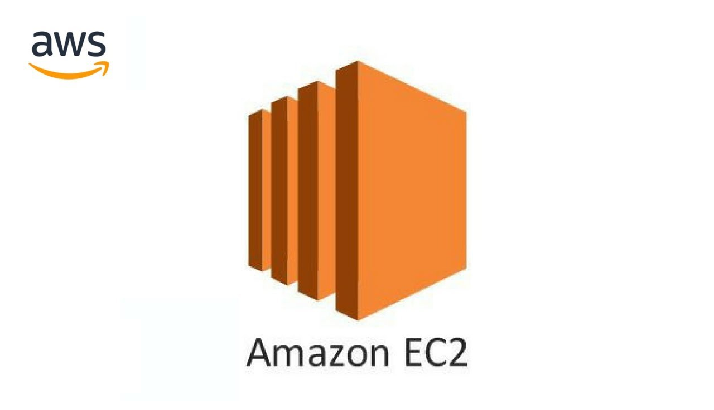

Elastic Compute Cloud
Amazon Elastic Compute Cloud (Amazon EC2) provides scalable computing capacity in the Amazon Web Services (AWS) Cloud. Using Amazon EC2 eliminates your need to invest in hardware up front, so you can develop and deploy applications faster. You can use Amazon EC2 to launch as many or as few virtual servers as you need, configure security and networking, and manage storage. Amazon EC2 enables you to scale up or down to handle changes in requirements or spikes in popularity, reducing your need to forecast traffic.
Features of Amazon EC2
Virtual computing environments, known as instances
Preconfigured templates for your instances, known as Amazon Machine Images (AMIs), that package the bits you need for your server (including the operating system and additional software)
Various configurations of CPU, memory, storage, and networking capacity for your instances, known as instance types
Secure login information for your instances using key pairs (AWS stores the public key, and you store the private key in a secure place)
Storage volumes for temporary data that's deleted when you stop, hibernate, or terminate your instance, known as instance store volumes
Persistent storage volumes for your data using Amazon Elastic Block Store (Amazon EBS), known as Amazon EBS volumes
Multiple physical locations for your resources, such as instances and Amazon EBS volumes, known as Regions and Availability Zones
A firewall that enables you to specify the protocols, ports, and source IP ranges that can reach your instances using security groups